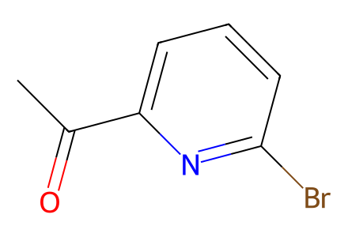
CC(=O)c1cccc(Br)n1Main Schemes 2-6 plus SI preparative intermediates 16a/22a-c and C3-configuration control network. Retrosynthetic placeholders and unisolated generic mechanistic intermediates are excluded. Stereochemistry follows actual drawings where SI headings disagree. Source 8 and 22a have no upstream preparation here. Facts compiled deterministically; independent review pending.
完整 JSON · 逐步 CSV · 路线序列 · SDF · HRMS 核对
| 事件 | 分子连接 | 报告产率 | Canonical reaction SMILES |
|---|---|---|---|
| E01 | 13 + cyanophosphonate → 14 | 14: 73% | CC(=O)c1cccc(Br)n1.COP(=O)(CC#N)OC>>C/C(=C\C#N)c1cccc(Br)n1 |
| E02 | 14 → 15 | 15: 97% | C/C(=C\C#N)c1cccc(Br)n1>>C[C@@H](CC#N)c1cccc(Br)n1 |
| E03 | 15 → 16a | 16a: 63% | C[C@@H](CC#N)c1cccc(Br)n1>>C[C@@H](CC=O)c1cccc(Br)n1 |
| E04 | 16a → 16 | 16: 99% | C[C@@H](CC=O)c1cccc(Br)n1>>C[C@@H](CCO)c1cccc(Br)n1 |
| E05 | 16 → 17 | 17: 99% | C[C@@H](CCO)c1cccc(Br)n1>>C[C@@H](CCO[Si](C)(C)C(C)(C)C)c1cccc(Br)n1 |
| E06 | 17 + vinyltributyltin → 10 | 10: 99% | C=[CH][Sn]([CH2]CCC)([CH2]CCC)[CH2]CCC.C[C@@H](CCO[Si](C)(C)C(C)(C)C)c1cccc(Br)n1>>C=Cc1cccc([C@@H](C)CCO[Si](C)(C)C(C)(C)C)n1 |
| E07 | 18 + tBuOH → 19 | 19: 89% | CC(C)(C)O.O=C1CC[C@H](C(=O)O)O1>>CC(C)(C)OC(=O)[C@H]1CCC(=O)O1 |
| E08 | 19 + Weinreb amine hydrochloride → 20 | 20: 99% | CC(C)(C)OC(=O)[C@H]1CCC(=O)O1.C[NH2+]OC.[Cl-]>>CON(C)C(=O)CC[C@@H](O)C(=O)OC(C)(C)C |
| E09 | 20 → 21 | 21: 99% | CON(C)C(=O)CC[C@@H](O)C(=O)OC(C)(C)C>>CON(C)C(=O)CC[C@@H](O[Si](C)(C)C(C)(C)C)C(=O)OC(C)(C)C |
| E10 | 22a + allyl bromide → 22b | 22b: 75% | C=CCBr.CCC(=O)N1C(=O)OC[C@@H]1Cc1ccccc1>>C=CC[C@@H](C)C(=O)N1C(=O)OC[C@@H]1Cc1ccccc1 |
| E11 | 22b → 22c | 22c: 99% | C=CC[C@@H](C)C(=O)N1C(=O)OC[C@@H]1Cc1ccccc1>>C=CC[C@@H](C)CO |
| E12 | 22c → 22 | 22: 70% | C=CC[C@@H](C)CO>>C=CC[C@@H](C)CBr |
| E13 | 22 → 23 | not reported | C=CC[C@@H](C)CBr>>C=CC[C@@H](C)[CH2][Mg][Br] |
| E14 | 21 + 23 → 24 | 24: 88% | C=CC[C@@H](C)[CH2][Mg][Br].CON(C)C(=O)CC[C@@H](O[Si](C)(C)C(C)(C)C)C(=O)OC(C)(C)C>>C=CC[C@@H](C)CC(=O)CC[C@@H](O[Si](C)(C)C(C)(C)C)C(=O)OC(C)(C)C |
| E15 | 10 + 24 → 25 | 25: 65% | C=CC[C@@H](C)CC(=O)CC[C@@H](O[Si](C)(C)C(C)(C)C)C(=O)OC(C)(C)C.C=Cc1cccc([C@@H](C)CCO[Si](C)(C)C(C)(C)C)n1>>C[C@H](C/C=C/c1cccc([C@@H](C)CCO[Si](C)(C)C(C)(C)C)n1)CC(=O)CC[C@@H](O[Si](C)(C)C(C)(C)C)C(=O)OC(C)(C)C |
| E16 | 25 → 27 | 27: 64% | C[C@H](C/C=C/c1cccc([C@@H](C)CCO[Si](C)(C)C(C)(C)C)n1)CC(=O)CC[C@@H](O[Si](C)(C)C(C)(C)C)C(=O)OC(C)(C)C>>C[C@@H](CC(=O)CC[C@@H](O[Si](C)(C)C(C)(C)C)C(=O)OC(C)(C)C)C[C@H](O)[C@@H](O)c1cccc([C@@H](C)CCO[Si](C)(C)C(C)(C)C)n1 |
| E17 | 27 → 26 | 26: 89% | C[C@@H](CC(=O)CC[C@@H](O[Si](C)(C)C(C)(C)C)C(=O)OC(C)(C)C)C[C@H](O)[C@@H](O)c1cccc([C@@H](C)CCO[Si](C)(C)C(C)(C)C)n1>>C[C@@H](CC(=O)CC[C@@H](O[Si](C)(C)C(C)(C)C)C(=O)OC(C)(C)C)C[C@@H]1O[C@H]1c1cccc([C@@H](C)CCO[Si](C)(C)C(C)(C)C)n1 |
| E18 | 26 → 28 | 28: 72% | C[C@@H](CC(=O)CC[C@@H](O[Si](C)(C)C(C)(C)C)C(=O)OC(C)(C)C)C[C@@H]1O[C@H]1c1cccc([C@@H](C)CCO[Si](C)(C)C(C)(C)C)n1>>C[C@@H](CC(=O)CC[C@@H](O)C(=O)OC(C)(C)C)C[C@@H]1O[C@H]1c1cccc([C@@H](C)CCO)n1 |
| E19 | 28 → 29 | 29: 60% | C[C@@H](CC(=O)CC[C@@H](O)C(=O)OC(C)(C)C)C[C@@H]1O[C@H]1c1cccc([C@@H](C)CCO)n1>>C[C@@H]1C[C@@H]([C@H](O)c2cccc([C@@H](C)CCO)n2)O[C@@]2(CC[C@H](C(=O)OC(C)(C)C)O2)C1 |
| E20 | 28 → 30 | 30: 93% | C[C@@H](CC(=O)CC[C@@H](O)C(=O)OC(C)(C)C)C[C@@H]1O[C@H]1c1cccc([C@@H](C)CCO)n1>>C[C@@H]1C[C@H]([C@@H](O)c2cccc([C@@H](C)CCO)n2)O[C@]2(CC[C@H](C(=O)OC(C)(C)C)O2)C1 |
| E21 | 30 → 31 | not reported | C[C@@H]1C[C@H]([C@@H](O)c2cccc([C@@H](C)CCO)n2)O[C@]2(CC[C@H](C(=O)OC(C)(C)C)O2)C1>>C[C@@H]1C[C@H]([C@@H](O)c2cccc3[n+]2CC[C@@H]3C)O[C@]2(CC[C@H](C(=O)O)O2)C1.O=C([O-])C(F)(F)F |
| E22 | 31 → 3 | 3: 80% | C[C@@H]1C[C@H]([C@@H](O)c2cccc3[n+]2CC[C@@H]3C)O[C@]2(CC[C@H](C(=O)O)O2)C1.O=C([O-])C(F)(F)F>>C[C@@H]1C[C@H]([C@@H](O)c2cccc3[n+]2CC[C@@H]3C)O[C@]2(CC[C@H](C(=O)[O-])O2)C1 |
| C01 | 8 + 9 → 10-rac | 10-rac: 22% | C=Cc1cccc(Br)n1.C[C@H](I)CCO[Si](C)(C)C(C)(C)C>>C=Cc1cccc(C(C)CCO[Si](C)(C)C(C)(C)C)n1 |
| C02 | 10-rac → 10a | 10a: 52% | C=Cc1cccc(C(C)CCO[Si](C)(C)C(C)(C)C)n1>>C=Cc1cccc(C(C)CCO)n1 |
| C03 | 13 + esterphosphonate → E-32 + Z-32 | E-32: 40%; Z-32: 48% | CC(=O)c1cccc(Br)n1.COC(=O)CP(=O)(OC)OC>>COC(=O)/C=C(/C)c1cccc(Br)n1.COC(=O)/C=C(\C)c1cccc(Br)n1 |
| C04 | E-32 → E-33 | E-33: 88% | COC(=O)/C=C(\C)c1cccc(Br)n1>>C/C(=C\C(=O)O)c1cccc(Br)n1 |
| C05 | E-33 + S-auxiliary → 11 | 11: 54% | C/C(=C\C(=O)O)c1cccc(Br)n1.O=C1N[C@@H](Cc2ccccc2)CO1>>C/C(=C\C(=O)N1C(=O)OC[C@@H]1Cc1ccccc1)c1cccc(Br)n1 |
| C06 | 11 → S,S-12 + R,S-12 | S,S-12: 22%; R,S-12: 13% | C/C(=C\C(=O)N1C(=O)OC[C@@H]1Cc1ccccc1)c1cccc(Br)n1>>C[C@@H](CC(=O)N1C(=O)OC[C@@H]1Cc1ccccc1)c1cccc(Br)n1.C[C@H](CC(=O)N1C(=O)OC[C@@H]1Cc1ccccc1)c1cccc(Br)n1 |
| C07 | S,S-12 → 16 | 16: 75% | C[C@@H](CC(=O)N1C(=O)OC[C@@H]1Cc1ccccc1)c1cccc(Br)n1>>C[C@@H](CCO)c1cccc(Br)n1 |
| C08 | R,S-12 → R-16 | R-16: 75% | C[C@H](CC(=O)N1C(=O)OC[C@@H]1Cc1ccccc1)c1cccc(Br)n1>>C[C@H](CCO)c1cccc(Br)n1 |
| C09 | 25 → 26 | not reported | C[C@H](C/C=C/c1cccc([C@@H](C)CCO[Si](C)(C)C(C)(C)C)n1)CC(=O)CC[C@@H](O[Si](C)(C)C(C)(C)C)C(=O)OC(C)(C)C>>C[C@@H](CC(=O)CC[C@@H](O[Si](C)(C)C(C)(C)C)C(=O)OC(C)(C)C)C[C@@H]1O[C@H]1c1cccc([C@@H](C)CCO[Si](C)(C)C(C)(C)C)n1 |

CC(=O)c1cccc(Br)n1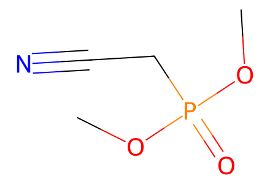
COP(=O)(CC#N)OC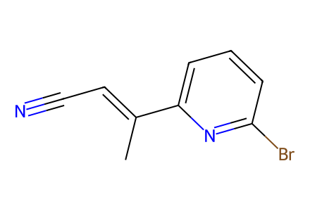
C/C(=C\C#N)c1cccc(Br)n1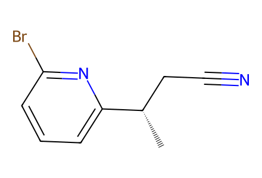
C[C@@H](CC#N)c1cccc(Br)n1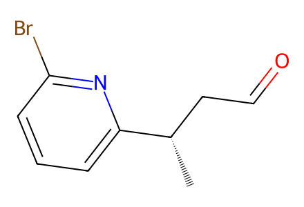
C[C@@H](CC=O)c1cccc(Br)n1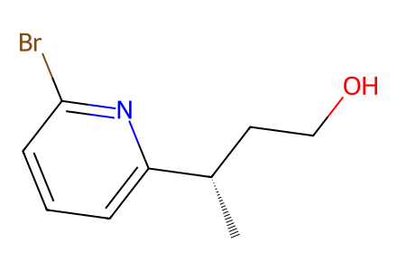
C[C@@H](CCO)c1cccc(Br)n1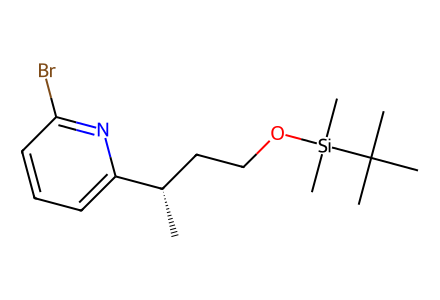
C[C@@H](CCO[Si](C)(C)C(C)(C)C)c1cccc(Br)n1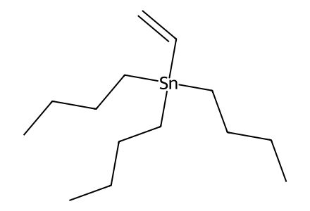
C=[CH][Sn]([CH2]CCC)([CH2]CCC)[CH2]CCC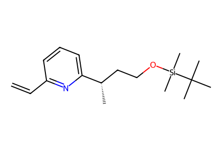
C=Cc1cccc([C@@H](C)CCO[Si](C)(C)C(C)(C)C)n1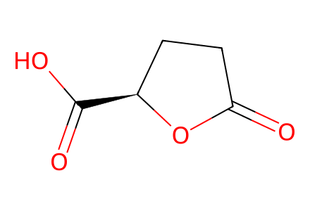
O=C1CC[C@H](C(=O)O)O1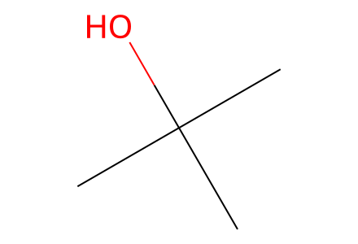
CC(C)(C)O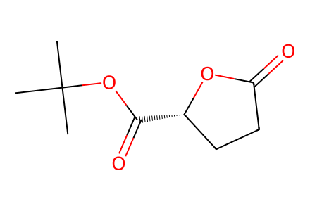
CC(C)(C)OC(=O)[C@H]1CCC(=O)O1
C[NH2+]OC.[Cl-]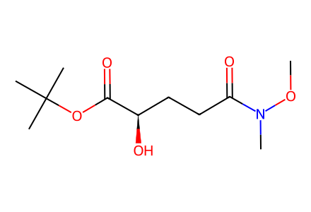
CON(C)C(=O)CC[C@@H](O)C(=O)OC(C)(C)C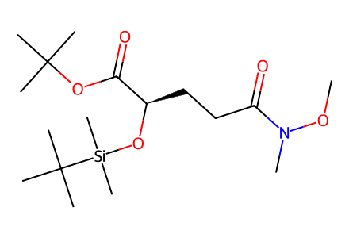
CON(C)C(=O)CC[C@@H](O[Si](C)(C)C(C)(C)C)C(=O)OC(C)(C)C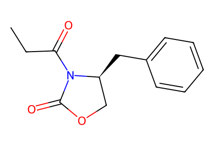
CCC(=O)N1C(=O)OC[C@@H]1Cc1ccccc1
C=CCBr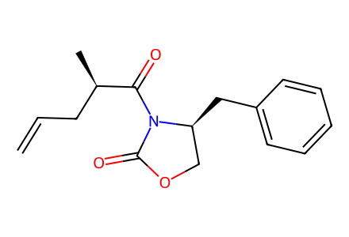
C=CC[C@@H](C)C(=O)N1C(=O)OC[C@@H]1Cc1ccccc1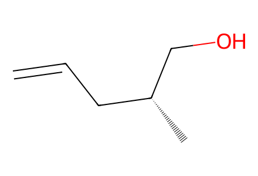
C=CC[C@@H](C)CO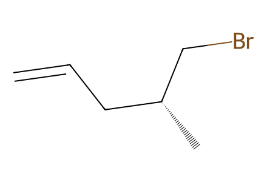
C=CC[C@@H](C)CBr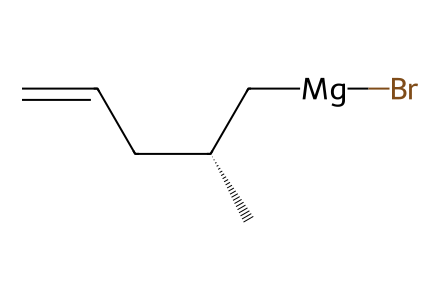
C=CC[C@@H](C)[CH2][Mg][Br]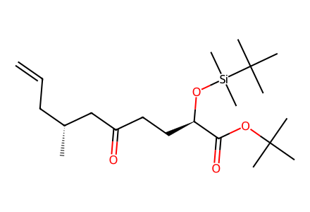
C=CC[C@@H](C)CC(=O)CC[C@@H](O[Si](C)(C)C(C)(C)C)C(=O)OC(C)(C)C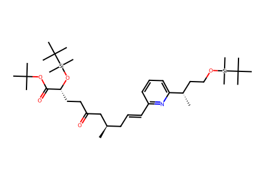
C[C@H](C/C=C/c1cccc([C@@H](C)CCO[Si](C)(C)C(C)(C)C)n1)CC(=O)CC[C@@H](O[Si](C)(C)C(C)(C)C)C(=O)OC(C)(C)C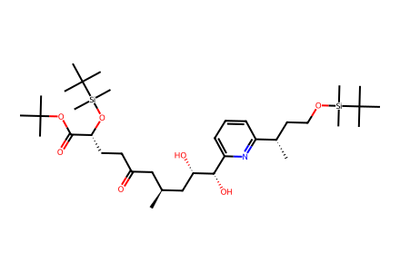
C[C@@H](CC(=O)CC[C@@H](O[Si](C)(C)C(C)(C)C)C(=O)OC(C)(C)C)C[C@H](O)[C@@H](O)c1cccc([C@@H](C)CCO[Si](C)(C)C(C)(C)C)n1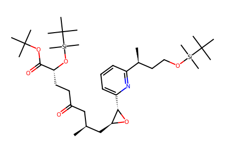
C[C@@H](CC(=O)CC[C@@H](O[Si](C)(C)C(C)(C)C)C(=O)OC(C)(C)C)C[C@@H]1O[C@H]1c1cccc([C@@H](C)CCO[Si](C)(C)C(C)(C)C)n1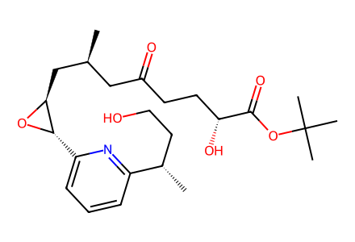
C[C@@H](CC(=O)CC[C@@H](O)C(=O)OC(C)(C)C)C[C@@H]1O[C@H]1c1cccc([C@@H](C)CCO)n1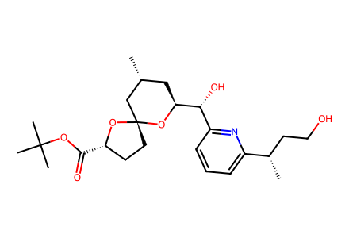
C[C@@H]1C[C@@H]([C@H](O)c2cccc([C@@H](C)CCO)n2)O[C@@]2(CC[C@H](C(=O)OC(C)(C)C)O2)C1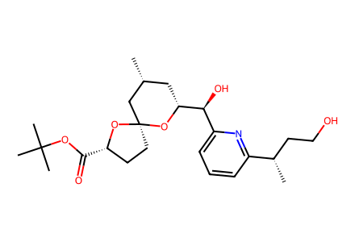
C[C@@H]1C[C@H]([C@@H](O)c2cccc([C@@H](C)CCO)n2)O[C@]2(CC[C@H](C(=O)OC(C)(C)C)O2)C1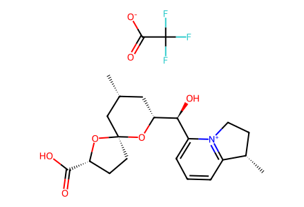
C[C@@H]1C[C@H]([C@@H](O)c2cccc3[n+]2CC[C@@H]3C)O[C@]2(CC[C@H](C(=O)O)O2)C1.O=C([O-])C(F)(F)F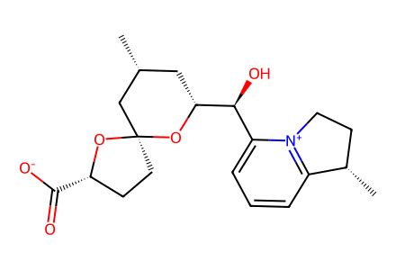
C[C@@H]1C[C@H]([C@@H](O)c2cccc3[n+]2CC[C@@H]3C)O[C@]2(CC[C@H](C(=O)[O-])O2)C1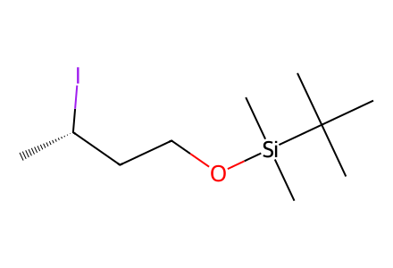
C[C@H](I)CCO[Si](C)(C)C(C)(C)C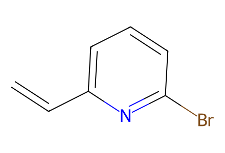
C=Cc1cccc(Br)n1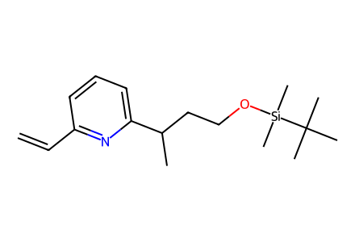
C=Cc1cccc(C(C)CCO[Si](C)(C)C(C)(C)C)n1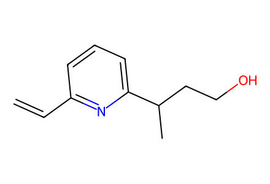
C=Cc1cccc(C(C)CCO)n1
COC(=O)CP(=O)(OC)OC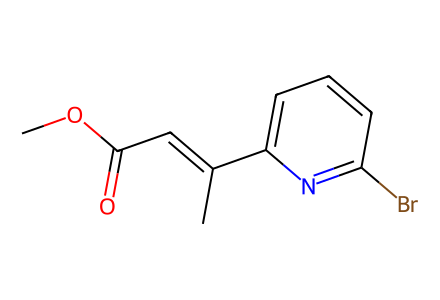
COC(=O)/C=C(\C)c1cccc(Br)n1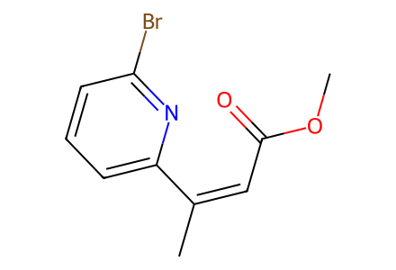
COC(=O)/C=C(/C)c1cccc(Br)n1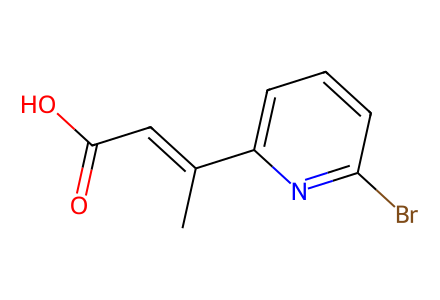
C/C(=C\C(=O)O)c1cccc(Br)n1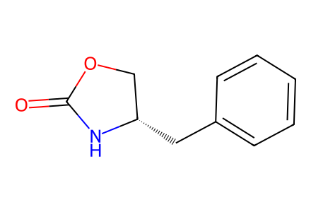
O=C1N[C@@H](Cc2ccccc2)CO1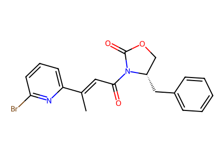
C/C(=C\C(=O)N1C(=O)OC[C@@H]1Cc1ccccc1)c1cccc(Br)n1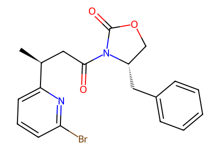
C[C@@H](CC(=O)N1C(=O)OC[C@@H]1Cc1ccccc1)c1cccc(Br)n1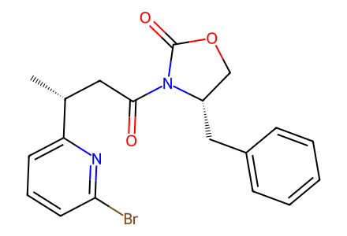
C[C@H](CC(=O)N1C(=O)OC[C@@H]1Cc1ccccc1)c1cccc(Br)n1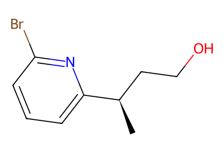
C[C@H](CCO)c1cccc(Br)n1